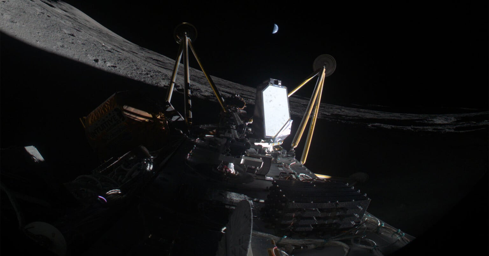
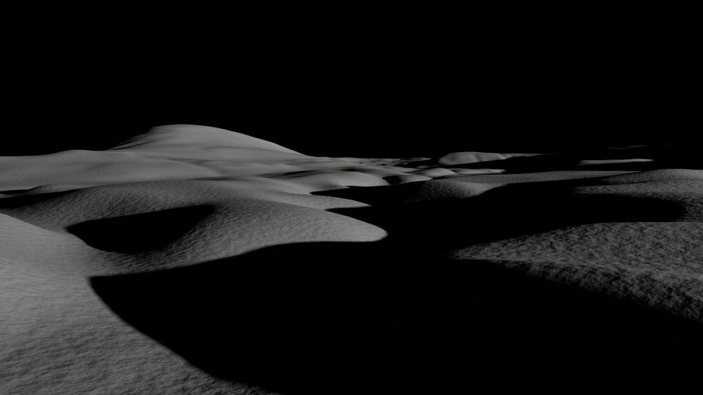
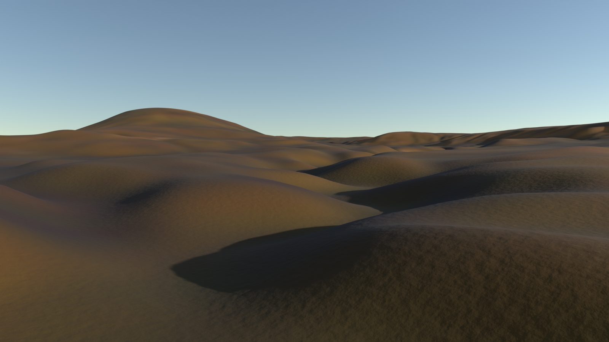

Photo: Intuitive Machines, March 2025
$0
Lost when Athena tipped over.
Our estimate: 95% of NASA’s $145M · it worked 12 of 240 planned hours
Athena
On its side · 6 Mar 2025
ARTEMIS IV
NASA Space Launch System · model: NASA 3D Resources
Since 2019,
12
landers tried.
Upright
Not upright
Crashed
Only
5
stayed upright.
Moon landings that began powered descent, Jan 2019 – Jun 2025 · CNSA, ISRO, JAXA, NASA, ispace, Intuitive Machines


0°
0°
25°
Lander limit 8°
LOLA 20 m · PGDA
SUN EL —
ALT —
Scroll, or press →
Live demo
→
Acquiring signal